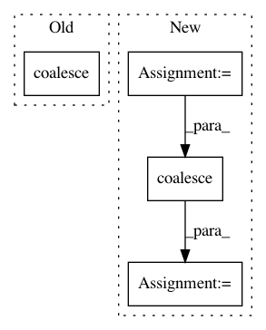

a3a05105f0a696a99f0b65384f9bed8e8702256f,test/utils/test_coalesce.py,,test_coalesce,#,5
Before Change
edge_index = torch.LongTensor([[1, 0, 1, 0, 2, 1], [0, 1, 1, 1, 0, 0]])
expected_output = [[0, 1, 1, 2], [1, 0, 1, 0]]
output = coalesce(edge_index)
assert output.tolist() == expected_output
After Change
def test_coalesce():
row = torch.LongTensor([1, 0, 1, 0, 2, 1])
col = torch.LongTensor([0, 1, 1, 1, 0, 0])
expected_output = [[0, 1, 1, 2], [1, 0, 1, 0]]
output = coalesce(torch.stack([row, col], dim=0))
assert output.tolist() == expected_output
In pattern: SUPERPATTERN
Frequency: 3
Non-data size: 4
Instances
Project Name: rusty1s/pytorch_geometric
Commit Name: a3a05105f0a696a99f0b65384f9bed8e8702256f
Time: 2018-04-18
Author: matthias.fey@tu-dortmund.de
File Name: test/utils/test_coalesce.py
Class Name:
Method Name: test_coalesce
Project Name: rusty1s/pytorch_geometric
Commit Name: 7f69a4ff73a73e4b2da4f554ee4640e185aa19a1
Time: 2018-05-20
Author: matthias.fey@tu-dortmund.de
File Name: test/utils/test_coalesce.py
Class Name:
Method Name: test_coalesce
Project Name: rusty1s/pytorch_geometric
Commit Name: b9c72612cf6c6e8b13de053fa54b79c52c8b0c21
Time: 2018-08-13
Author: matthias.fey@tu-dortmund.de
File Name: torch_geometric/nn/pool/pool.py
Class Name:
Method Name: pool_edge